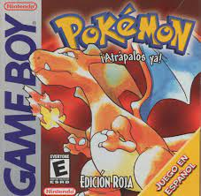
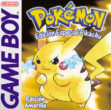

Pokemon rojo
Pokémon Edición Rojo Fuego y Edición Verde Hoja, conocidos en Japón como Pocket Monsters Fire Red & Leaf Green, son dos videojuegos lanzados para la consola portátil Game Boy Advance de Nintendo en octubre de 2004, siendo remakes de los videojuegos Pokémon Rojo y Azul, lanzados en 1996.
Pokémon amarillo
Pokémon Yellow: Special Pikachu Edition, conocido en Japón como: Pocket Monsters Pikachu, es la tercera edición de los primeros videojuegos de Pokémon del género RPG para Game Boy. Es muy similar a Pokémon Red y Blue.
Pokémon plata y oro


Pokémon Edición Oro y Edición Plata, conocidos en Japón como Pocket Monsters Kin & Gin, son la segunda entrega de la serie de videojuegos de Pokémon, de género RPG, desarrollados por la compañía .
Modo:
Videojuego multijugador
Desarrollador:
Game Freak
Nominaciones:
Nickelodeon Kids' Choice Awards al Video Juego Favorito
Géneros:
Videojuego de aventura, Juego de rol japonés
Diseñadores:
Ken Sugimori, Junichi Masuda, Satoshi Tajiri
Plataformas:
Game Boy, Game Boy Color, Nintendo 3DS
Distribuidores:
Nintendo, The Pokémon Company